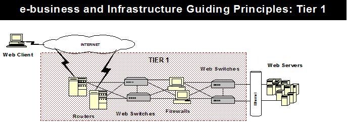
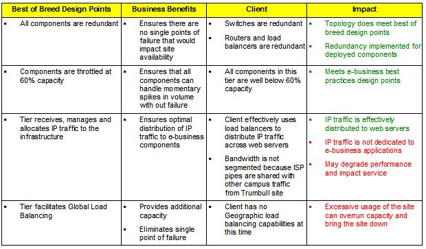
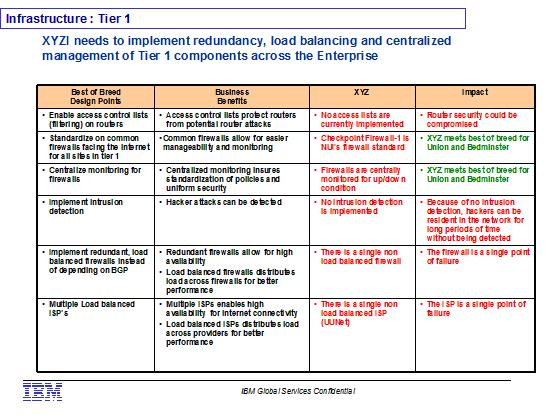

| Guideline: Assessing e-business Infrastructure against Leading Practices |
 |
|
1 DescriptionThis paper describes a technique for assessing an existing n-tiered e-business infrastructure by comparing it to established leading practices. This assessment will be completed through the use of a matrix containing infrastructure design guiding principles and associated business impacts, and by examining the corresponding attributes of the client’s existing e-business infrastructure. The guiding principles are best of breed design points or leading practices for e-business infrastructure design. They include design considerations for redundancy, scalability, and potential performance bottlenecks. These leading design practices provide a benchmark against which the client’s existing infrastructure can be compared. The assessment conclusions are developed by identifying where the client’s infrastructure or design practices deviate from the leading practices and by determining the impact of those deviations. The existing infrastructure may also be compared against the underlying n-tiered reference architecture to identify any significant differences in the functionality provided or in the placement and distribution of function and data.The guiding principles matrix and reference architecture are to be used as a reference for the overall assessment and are not intended to be used as the sole data-gathering tool. They should be utilized as part of the entire assessment process providing high level guidance for critical design points across an n-tiered environment. They will augment interview questions and help to segment the infrastructure into logical tiers for assessment. 2 ContextThis assessment technique can be applied as part of an e-business infrastructure assessment engagement or at the beginning of a larger e-business design engagement in order to understand the potential infrastructure issues that may need to be addressed by the design. This technique is focused on the assessment of e-business technical infrastructure. In many instances it will be conducted as part of a broader assessment of the client’s e-business readiness, so will be performed in parallel with a corresponding assessment of the client’s e-business infrastructure management processes and organization. The guiding principles or leading design practices are derived from the four-tiered e-business infrastructure reference design generally used in conjunction with the Rapid Infrastructure Design engagement model. However, this technique is also applicable in many other circumstances where an existing e-business technical infrastructure needs to be assessed. This paper provides a rapid e-business infrastructure assessment technique by which the engagement team can quickly compare the current infrastructure against the best practices design points in each tier. There are several reasons why this technique was developed:
Lastly, it helps to provide a more objective assessment approach that will help improve the consistency of e-business infrastructure assessment. By doing so, it reduces the experience required to perform an initial assessment, reduces the dependency on highly skilled individuals to perform the assessment, and helps eliminate some of the subjectivity inherent in less structured assessment techniques. 3 Steps3.1 Review Statement of WorkThe first step is to review the SOW to ensure the infrastructure matrix is a fit for the engagement being executed based on the hours in the contract, the resources, and the detail required by the client.
3.2 Validate the Team SkillsAs with any engagement it is important that the team members understand the overall purpose or reason for using the guiding principles matrices. It’s just as important that they are familiar with the design points across the various tiers and have the skills to quickly compare them to the client environment. All practitioners should have credibility within the organization to perform the assessment; the team must avoid sending "whoever is free" for data gathering activities. The impact statements and recommendations will obviously depend on their experience. Since many of these e-business assessments are by nature short in duration ranging from 4-6 weeks, there is minimal time for follow-up interviews if not adequately executed the first time. Even though these engagements are short and performed with small teams of 3-4 practitioners, interviews are typically performed pairs. This balances skills and background ensuring that as much relevant information can be gathered efficiently while keeping the interview within the scope of the engagement. 3.3 Select Data Gathering TechniqueAssessments can be facilitated in a number of ways - via interviews, questionnaires, workshops or a combination thereof. Decide which is appropriate, based upon the scope, time available and assessment objectives. The use of the best practices design points is meant to add consistency, provide a logical segmented assessment technique and augment the regular assessment approaches.
3.4 Map Client Infrastructure to the Four Tier Reference ModelThe infrastructure design guiding principles matrices are based on a four-tiered conceptual model. Most clients, however, clients will have an n–tiered rather than a four- tiered e-business infrastructure. Because of this, the practitioners on the team will need to be technically adept enough to recognize this and evaluate where the various components in a client environment ‘should’ reside according to the guiding principles. Then assess these components versus that tier i.e. the tier the component should reside in. For example, the guiding principles dictate that no databases or application servers should reside in Tier I or II. In the event that the client has these types of servers in Tier II, two things should happen:
3.5 Assess the Client Infrastructure versus the Leading Design PracticesFor each of the four tiers in the reference architecture:
For each design point, review the client’s conformance or non-conformance and document the implications and identify any actions required to address significant exposure. 3.6 Prepare the Assessment ReportOnce the analysis has been completed for all aspects of all tiers, review the consolidated set of design implications and develop an integrated set of conclusions about the current infrastructure and any resulting recommendations and priorities for improvement actions. 4 ToolsFor ease of maintenance the leading practices for e-business infrastructure design are documented separately to this technique paper. Refer to the attached files:
Copies of these files should be found as attached as references to this technique paper. Alternatively, copies may be found on ICM AssetWeb in the e-Transformation database, and embedded within the Rapid Infrastructure Design engagement model. 5 Examples5.1 Assessment Matrix ExampleBelow is an example of part of the assessment matrix for ease of maintenance, the leading practices for e-business infrastructures are documented outside this technique paper. 
Routers can be upgraded to support additional processing  5.2 Final Report ExampleThe example below shows how information captured in the assessment matrix can be readily incorporated into the client deliverable. For added clarity those areas of the client infrastructure that do not meet a specific design point are documented in red while those areas that do meet best practice are documented in green text.  |
| Examples | |
|---|---|
| Supporting Materials |
| © Copyright IBM Corp. 1987, 2012 All Rights Reserved Property of IBM These materials are intended only for use as part of an IBM engagement |